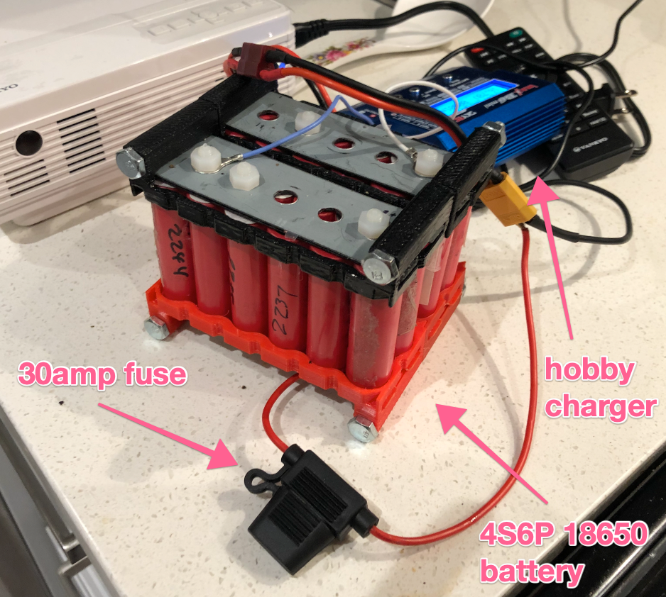

Building a lithium ion battery, part 1: “Why”
Why build a battery? Why build a battery from scratch? I’ll tell you.
Why build a battery from scratch?
Battery technology is becoming very important. Cell phones, laptops and now cars rely on batteries for power. More importantly, I needed a battery unit for reasons (more on this later).
I could’ve purchased a battery off the shelf, but consumer units are quite expensive. For example [Goal Zero Yeti 400 Lithium is $800. I thought I could build one for about a 1/3 of the price.
I was also curious to understand how modern lithium batteries work. So really, the combination of wanting to save money and nerd out and learn something about electronics/battery tech were the two driving reasons behind this experiment.
Why do I need a battery at all?
I’d like to have a massive power bank for when we go camping. I also have a small portable projector for watching movies when we’re car camping. I know purists will disagree, but here we are. Also nerding out.
Why lithium batteries?
Briefly, there are two types of batteries:
- lead acid - like the starter battery in your car
- lithium ion- like the one in your cell phone
Lead acid tend to be easier to maintain, while lithium ion are quite finicky. However lead acid battery are typically 3-5 times heavier than an equivalent lithium ion battery. Lithium ion batteries have a better cycle life and are therefore more energy dense.
I also thought I could go on craigslist and purchase some reclaimed lithium ion cells to bring the overall cost down.
Overall cost to performance ratio is in favour of lithium ion cells.
In the next instalment I’ll describe my prototyping efforts. Here’s the teaser, a functional 4S6P 18650 battery.
